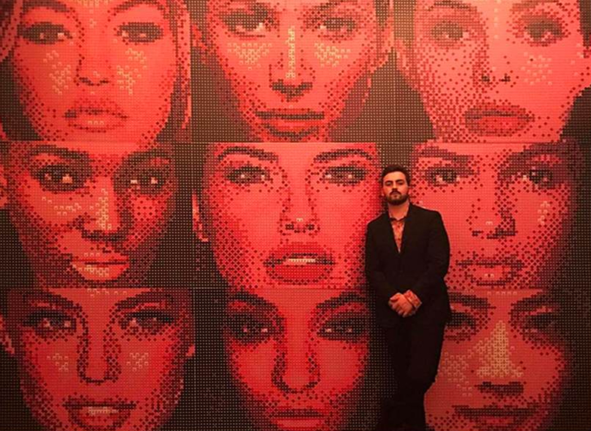
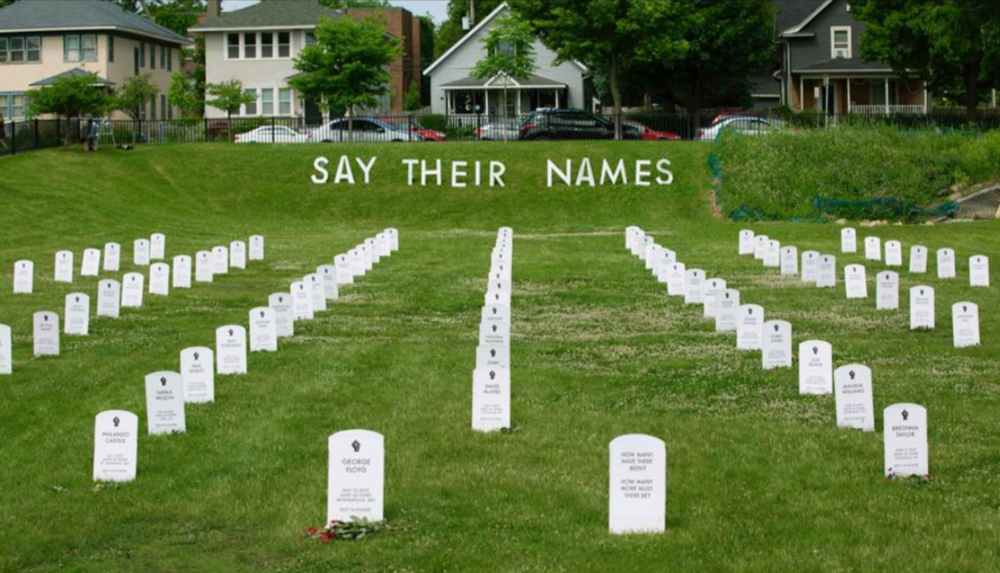
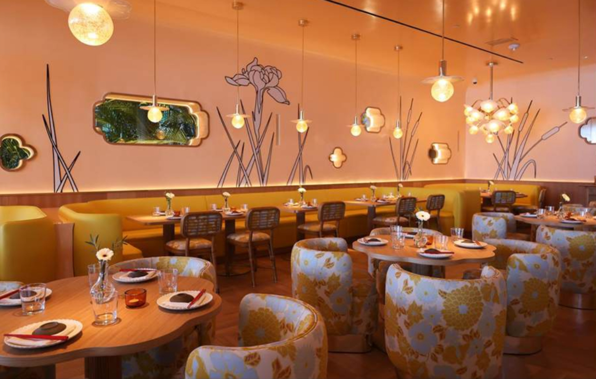
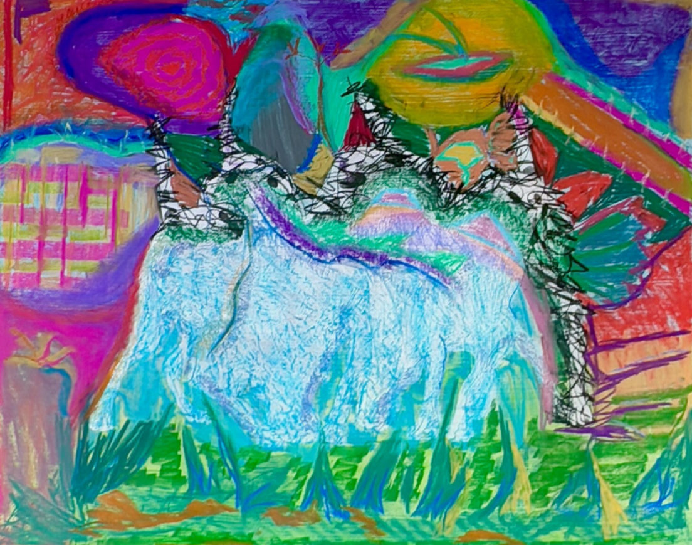
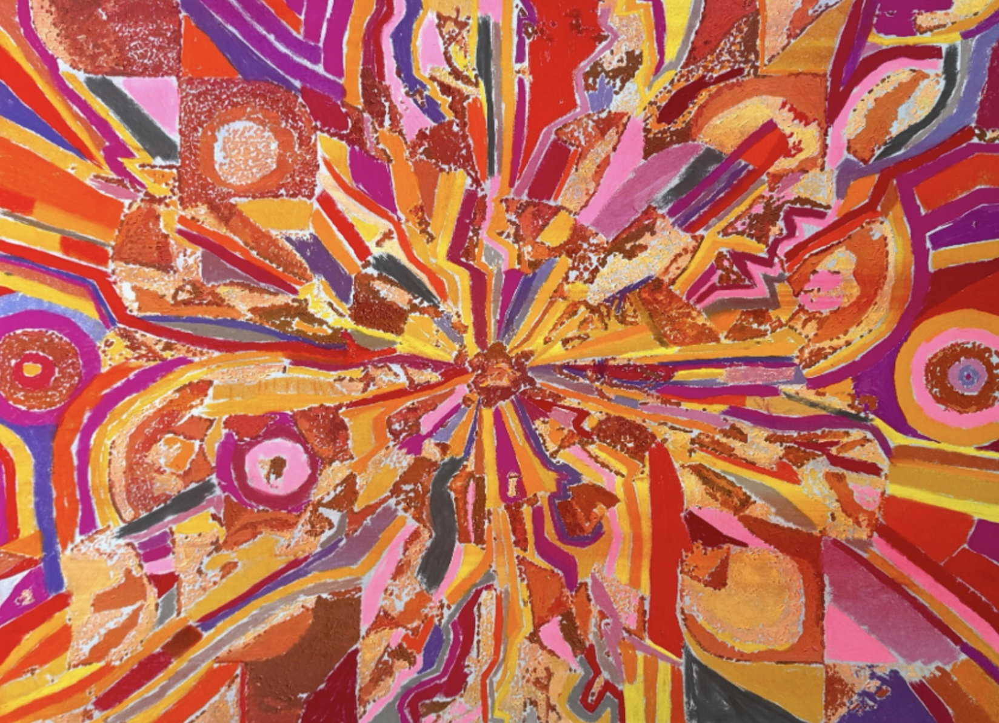

Connor Wright is a multidisciplinary artist based in New York. His work explores the tension between abstraction and identity, often using fragmented figuration, bold color, and layered mark-making to push the boundaries of historical visual languages.

Wright’s career began with large-scale installations and public commissions. As a senior in high school, he created a 300-square-foot mural that gained viral attention, leading to an invitation to participate in Meta’s Artist-in-Residence program the summer before his freshman year of college. Shortly after, Mark Zuckerberg publicly praised his work, accelerating his visibility. Since then, he has completed major commissions for corporate and institutional clients including:
- Meta
- Broadway’s TBD Productions
- The St. Louis Cardinals
- Maybelline

Critical Recognition
His work received significant recognition with the “Say Their Names” Cemetery, an installation memorializing victims of police brutality, which was featured on the front page of The New York Times in 2020.
Wright’s practice has shifted toward painting, with a focus on large-scale oil stick works that engage with abstraction and figuration. His recent Zoo series is an exploration of gesture, color, and scale, incorporating bold mark-making and sculptural textures that create a sense of movement and layered meaning.

His upcoming Mask series expands on this approach, further breaking down the human face into a fragmented visual language. These works engage with historical and cultural references while remaining deeply personal, pushing the dialogue between identity and abstraction.
Over the past two years, Wright has sold more than $400,000 in artwork directly to private collectors. He has made close connections with Susan and Michael Hort, Nicolai and Katja Tangen, Michael Xufu, among others. He has built a strong independent market but is now looking to establish gallery representation to further develop his practice and expand institutional placement.

"Seeking gallery representation to further develop his practice and expand institutional placement"
Wright is currently refining his new body of work and is interested in positioning it within a broader curatorial context. His focus is on developing relationships with galleries and institutions that align with his vision and can help support the next phase of his career.
